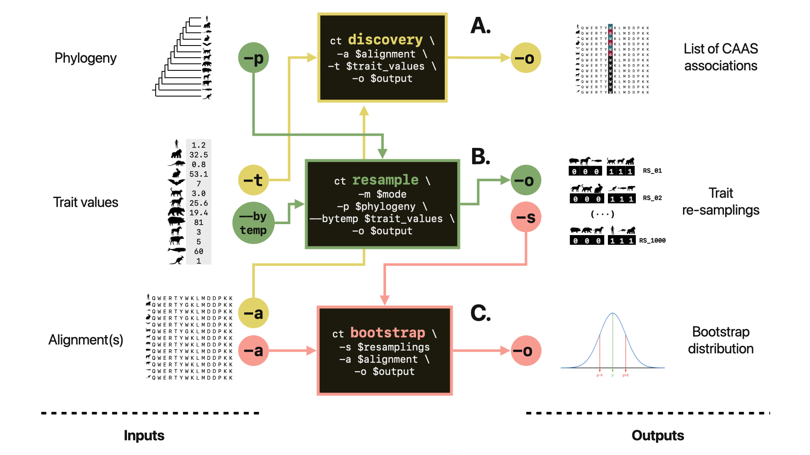

Fabio Barteri
Computational Biologist and Dry Lab Manager.
Last site update May 2023. My name is Fabio Barteri and I am a Computational Biologist at the Barcelona Beta Brain Research Centre and Universitat Pompeu Fabra. I work as a Bioinformatics Lab Manager in the group led by Prof. Arcadi Navarro.
Research interests
My scientific activity revolves aroud the implementation of computational approaches to infer genome-phenome maps from evolutionary data.
Convergent Amino Acid Substitutions
Amino Acid substitutions that are consistent with phenotype convergence can indicate that the protein is linked to that phenotype. We call these mutations Convergent Amino Acid Substitutions (CAAS). CAAS can represent an important starting point to reconstruct the genetic background of complex traits. At the moment, we are striving to improve our CAAS detection and validation strategy.
CAAStools, a toolbox to identify and test Convergent Amino Acid Substitutions

In the last years, the lab led by Arcadi Navarro @ UPF-Barcelona has developed a strategy to identiy, test and validate CAAS in orthologous protein alignments from different mammalian species. In 2023 we released CAAStools, a toolbox written in Python that allows the user to detect and test CAAS.
CAAStools is available in GitHub
INSTALLATION
git clone https://github.com/linudz/caastools
export PATH=$PATH:caastools_folder_path
Simulation of trait evolution.
Quantitative traits can variate considerably within and between species. Sometimes this variation comes from neutral evolution, sometimes is the consequence of selective pressure.
Lab Management
As a Bioinformatics lab manager in the Navarro’s group, I take care of several aspects of the bioinformatics routine in the lab.
Selected Publications
A full list of my publications is available in my Google Scholar.
CAAStools, a toolbox to identify and test Convergent Amino Acid Substitutions. Barteri et al., BiorXIV, 2023
Comparative analysis of mammal genomes unveils key genomic variability for human life span. Farré et al., Molecular Biology and Evolution, 2021
The Role of Transposable Elements in Congenital Malformations with Notes on Their Potential Implications for Morphological Evolution in Mammals. Barteri and Esteve-Altava, Current Molecular Biology Reports, 2023
More about me
I come from Rome where I was born and raised. I moved to Barcelona in 2015 for my PhD, and I have been living there ever since.